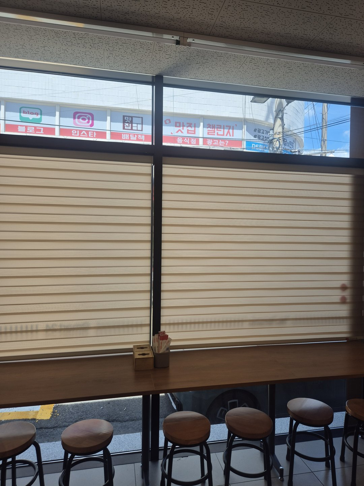
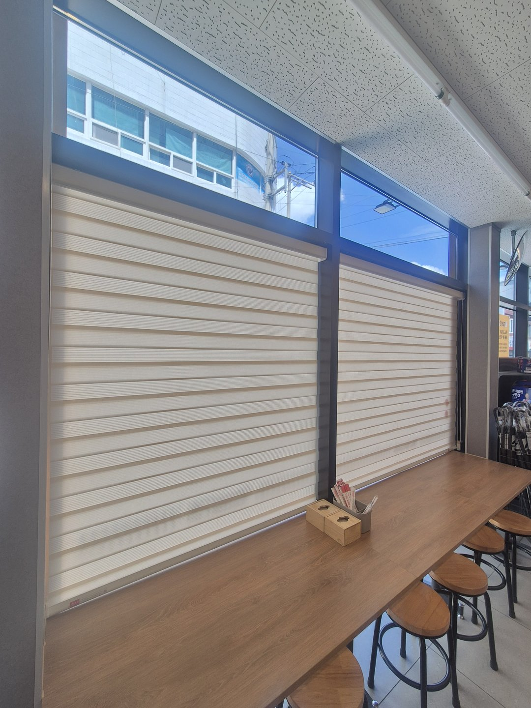
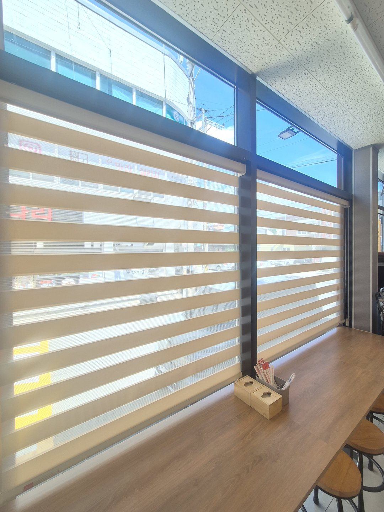
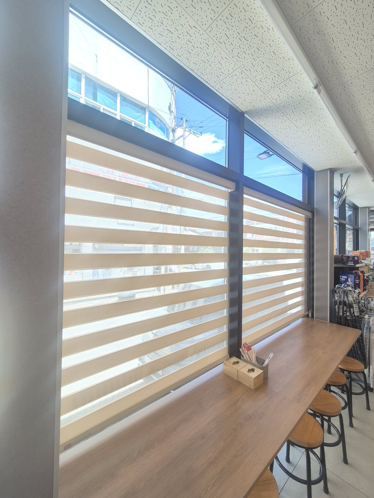

2026년 7월 27일 시공
예천 이마트24 편의점 창가
베이지 콤비블라인드 시공후기

예천에 있는 이마트24 편의점 창가 시공입니다. 창을 따라 바 테이블을 길게 놓고 스툴을 여섯 개 붙여 놓은 취식대 자리였습니다. 사장님이 처음 연락 주시면서 하신 말씀은 "저 자리가 낮에는 거의 안 팔린다"였습니다. 자리 위치가 안 좋아서 그런 줄 알고 계셨습니다.
자리가 나쁜 게 아니라 그 시간대 볕이 문제였습니다
가서 보니 원인은 단순했습니다. 하루 중 볕이 정면으로 들어오는 시간대가 있고, 그때는 눈이 부셔서 앉아 있기가 어렵습니다. 테이블 상판에 빛이 반사되고 앞을 보면 창이 하얗게 날아갑니다.
편의점 창가에서 컵라면 하나 먹는 시간은 길어야 오 분입니다. 그 오 분이 불편하면 손님은 그냥 봉지에 담아 나가서 드십니다. 매장에서 먹고 가는 매출이 사라지는 겁니다. 자리 배치를 바꿀 문제가 아니라 빛을 정리할 문제였습니다.

매장은 완전 차광으로 가면 안 됩니다
눈부심만 생각하면 진한 색 암막으로 다 막아버리는 게 제일 확실합니다. 그런데 매장은 다릅니다. 가게는 밖에서 안이 보여야 사람이 들어옵니다. 지나가다 창 너머로 안이 환하고 사람이 앉아 있는 게 보이면 들어가도 되는 가게처럼 보입니다. 반대로 창이 새까맣게 막혀 있으면 영업을 하는지 안 하는지 알 수가 없습니다.
특히 편의점은 목적 없이 지나가다 들어오는 손님 비중이 큽니다. 창을 막는 순간 그 손님을 잃습니다. 그래서 이 현장의 조건은 두 가지였습니다. 볕이 강한 시간에는 그늘을 만들 것, 그 외 시간에는 매장이 밖에서 보일 것.

그래서 콤비블라인드로 갔습니다
콤비블라인드는 불투명 띠와 비치는 망사 띠가 번갈아 배열된 원단이 두 겹으로 겹쳐 있는 구조입니다. 두 겹을 어긋나게 놓으면 불투명 띠가 창을 덮어 그늘이 되고, 겹치게 맞추면 망사 구간이 열려 빛이 통과합니다.
슬랫을 열어두면 바깥에서 안이 흐릿하게 비쳐 보입니다. 안에 사람이 있다는 게 전해질 정도는 되고, 앉아 있는 손님 얼굴이 길에서 또렷하게 보이지는 않습니다. 그러다 볕이 정면으로 들어오는 시간이 되면 조작줄을 당겨 슬랫을 닫아 그늘을 만듭니다.

기둥을 기준으로 두 짝으로 나눴습니다
창이 옆으로 길게 이어지고 가운데에 기둥이 하나 서 있는 구조였습니다. 이런 창은 한 짝으로 쭉 뽑고 싶어지는데, 폭이 일정 이상 넘어가면 통짜가 손해입니다.
콤비블라인드는 원단이 두 겹으로 감기기 때문에 같은 폭의 롤스크린보다 무겁습니다. 폭이 넓어질수록 헤드레일 중앙이 아래로 처지고, 처지면 원단이 한쪽으로 쏠려 감깁니다. 몇 달 지나서 "블라인드가 자꾸 삐뚤어져요"라고 연락 오는 경우 대부분 이 처짐이 원인입니다.
나누면 각 축이 가벼워져 조작이 부드럽고, 한쪽만 내릴 수도 있습니다. 볕이 드는 방향이 시간에 따라 옮겨 가니까 매장에서는 이게 특히 유용합니다.

색은 베이지, 상단 고정창은 남겼습니다
처음엔 진한 색도 후보에 있었습니다. 그런데 매장 테이블이 원목 톤이고 바닥이 밝은 타일이라, 창 전체가 진한 색으로 들어가니까 안이 답답하고 좁아 보였습니다. 편의점처럼 면적이 넓지 않은 매장에서는 창 색이 공간 체감 크기를 꽤 많이 바꿉니다.
베이지로 가면 테이블 원목과 톤이 이어지고, 빛이 통과할 때 색도 따뜻하게 떨어집니다. 매장 조명이 백색이라 창가만 살짝 따뜻해지는 게 오히려 자리를 부드럽게 만들었습니다.
위쪽 가로로 긴 고정창은 일부러 시공하지 않았습니다. 그 창은 눈높이보다 훨씬 위라 눈부심에 관여하지 않고, 거기까지 덮으면 천장선이 내려와 매장이 낮아 보입니다. 막을 필요가 없는 창은 안 막는 게 낫습니다.
마지막으로 조작줄은 벽에 안전 클립으로 고정했습니다. 편의점은 아이들을 포함해 불특정 다수가 드나드는 공간이라, 줄이 늘어져 있으면 안 됩니다. 매장 시공에서는 이게 선택이 아니라 기본입니다.

시공 정보
지역 : 경상북도 예천군 (이마트24 편의점)
공간 : 창가 취식대 통창
제품 : 베이지 콤비블라인드 2짝 분할
포인트 : 시선은 가리고 빛은 통과 / 기둥 기준 분할 / 상단 고정창 미시공 / 조작줄 안전 고정
작업 시간 : 1일 (영업 중 진행)
시공일 : 2026년 7월 27일
자주 묻는 질문
Q. 편의점이나 카페 같은 매장에도 블라인드 시공이 되나요?
됩니다. 오히려 매장 시공이 가정집보다 고려할 게 많습니다. 밖에서 안이 보여야 하는지, 영업 시간에 작업이 가능한지, 조작줄 안전은 어떻게 할지를 먼저 정리한 뒤 제품을 고릅니다.
Q. 눈부신데 매장이 어두워 보이는 건 싫습니다. 방법이 있나요?
콤비블라인드가 그 용도입니다. 슬랫을 맞추면 망사 구간으로 빛이 들어와 매장이 밝게 보이고, 바깥 시선만 흐려집니다. 볕이 강한 시간에만 슬랫을 닫아 그늘을 만들면 됩니다.
Q. 창이 넓은데 한 짝으로 뽑는 게 나은가요?
폭이 넓어질수록 나누는 쪽이 낫습니다. 통짜는 헤드레일 중앙이 처져 원단이 쏠려 감기고 조작도 무거워집니다. 나누면 가볍고 필요한 쪽만 내릴 수 있습니다.
Q. 영업 중인 매장인데 문을 닫아야 하나요?
대부분 닫지 않습니다. 창 앞 좌석만 잠시 비워 주시면 작업이 가능합니다. 이번 현장도 영업하시는 상태에서 진행했습니다.
Q. 상단 고정창까지 다 하는 게 좋지 않나요?
눈높이보다 한참 위에 있는 창은 눈부심에 거의 관여하지 않습니다. 거기까지 덮으면 천장이 낮아 보이고 비용도 늘어납니다. 실측 때 어느 창이 실제로 문제인지 보고 정합니다.
Q. 예천도 방문 시공 되나요?
됩니다. 예천, 문경, 상주, 영주, 안동, 의성, 영천, 포항, 경주 일대는 따솜커튼블라인드 이실장(010-2825-7275)이 직접 방문해 실측하고 시공합니다.
마무리
창가 자리가 놀고 있으면 자리 위치를 탓하기 쉽습니다. 그런데 매장에서 안 쓰는 자리를 보면 대부분 이유가 하나씩 있습니다. 이 현장은 볕이었고, 볕은 제품 하나로 정리가 됐습니다. 자리 여섯 개가 다시 살아났으면 그걸로 충분한 시공입니다.
비슷한 시공이 필요하신가요?
창 전체가 나오게 찍은 사진 한 장 주시면 방문 전에 견적을 알려드립니다.
매장이라면 창 앞에 뭐가 놓여 있는지까지 함께 보이게 찍어주시면 더 정확합니다.